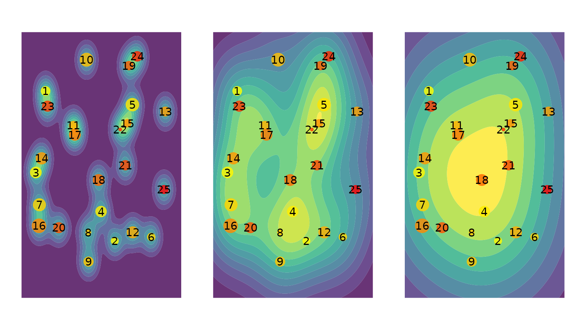
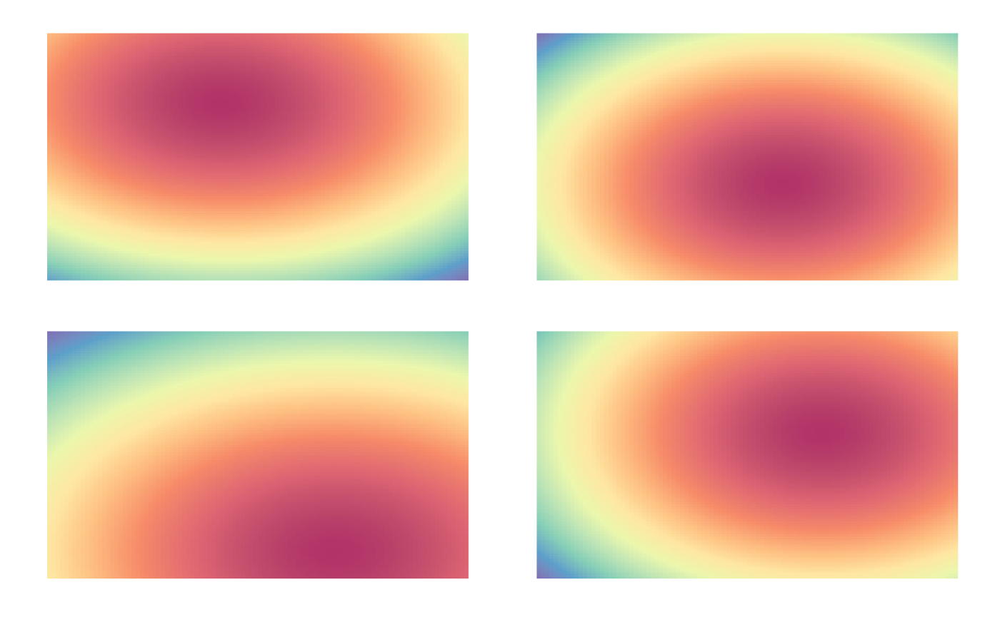

Overview
Overview.RmdEye-movement similarity analysis
The main goal of eyesim is to provide tools for
computing measures of similarity between eye-movement fixation data
collected over a series of trials embedded in an experimental design. A
major focus of the library is to offer easy ways to compare fixation
patterns between two experimental states, for example, between
perceiving an image and remembering that same image. These kinds of
analyses are useful in assessing and quantifying so-called “eye-movement
reinstatement” in studies of memory. Below we describe some basic
aspects of the library that should allow one to get started with it.
A Basic unit: the fixation group
A fixation group is a set of eye-movement fixations that comprise a
meaningful unit in a study, for example, a trial, a condition, a
participants, a time window, etc. Every fixation group contains a set of
xy coordinates and corresponding vectors indicating the
onset (when did the fixation start?) and the
duration (how long did the fixation last?) of the sequence
of fixations. Below we create a fixation group from a set of 3
coordinates occurring at at times 0, 10, and 60.
After creating a fixation_group object, we then plot it
to visualize the location of the three fixations. The size of each point
is scaled by duration and the color of each point is mapped to the onset
time, with yellow colors being early-ocurring and red colors being
late-occurring in this group.
library(eyesim)
library(patchwork)
library(dplyr)
library(ggplot2)
fg <- fixation_group(x=c(-100, 0, 100), y=c(0, 100, 0), onset=c(0,10,60), duration=c(10,50,100))
plot(fg)Now we create larger group consisting of 25 randomly generated eye-movements.
## generate random fixation coordinates
cds <- do.call(rbind, lapply(1:25, function(i) {
data.frame(x=runif(1)*100, y=runif(1)*100)
}))
## generate random increasing onsets
onset <- cumsum(runif(25)*100)
## construct a "fixation_group" object
fg <- fixation_group(x=cds[,1], y=cds[,2], onset=onset, duration=c(diff(onset),25))
plot(fg)That’s a pretty busy display, but captures the sequence of eye-movements. We can also plot various kinds of “density” maps which show where the fixations were most likely to occur.
Below we show three different ways of plotting fixation density: a contour plot, a raster plot, and a filled contour plot.
p1 <- plot(fg, typ="contour", xlim=c(-10,110), ylim=c(-10,110), bandwidth=35)
p2 <- plot(fg, typ="raster", xlim=c(-10,110), ylim=c(-10,110), bandwidth=35)
p3 <- plot(fg, typ="filled_contour", xlim=c(-10,110), ylim=c(-10,110), bandwidth=35)
p1+p2+p3
#> Warning: The dot-dot notation (`..level..`) was deprecated in ggplot2 3.4.0.
#> ℹ Please use `after_stat(level)` instead.
#> ℹ The deprecated feature was likely used in the eyesim package.
#> Please report the issue to the authors.
#> This warning is displayed once every 8 hours.
#> Call `lifecycle::last_lifecycle_warnings()` to see where this warning was
#> generated.
#> Warning: Computation failed in `stat_density2d()`.
#> Computation failed in `stat_density2d()`.
#> Caused by error in `precompute_2d_bw()`:
#> ! `h` must be a vector of length 2, not length 1.
#> Warning: Computation failed in `stat_density2d_filled()`.
#> Caused by error in `precompute_2d_bw()`:
#> ! `h` must be a vector of length 2, not length 1.We can also vary the bandwidth of the two-dimensional density estimation procedure to visualize the fixations at different levels of smoothness.
p1 <- plot(fg, typ="filled_contour", xlim=c(-10,110), ylim=c(-10,110), bandwidth=20)
p2 <- plot(fg, typ="filled_contour", xlim=c(-10,110), ylim=c(-10,110), bandwidth=60)
p3 <- plot(fg, typ="filled_contour", xlim=c(-10,110), ylim=c(-10,110), bandwidth=100)
p1+p2+p3
#> Warning: Computation failed in `stat_density2d_filled()`.
#> Caused by error in `precompute_2d_bw()`:
#> ! `h` must be a vector of length 2, not length 1.
#> Warning: Computation failed in `stat_density2d_filled()`.
#> Caused by error in `precompute_2d_bw()`:
#> ! `h` must be a vector of length 2, not length 1.
#> Warning: Computation failed in `stat_density2d_filled()`.
#> Caused by error in `precompute_2d_bw()`:
#> ! `h` must be a vector of length 2, not length 1.
Computing similarity between fixation groups
Suppose we have two fixation groups, fg1 and
fg2, how do we compare these coordinate sets? The
eyesim package provides methods for computing similarities
between spatial density maps. Below, we generate two eye-movement
patterns, one of which is a perturbed version of the other. Then we
compute a series of similarity metrics on the two patterns.
cds <- do.call(rbind, lapply(1:25, function(i) {
data.frame(x=runif(1)*100, y=runif(1)*100)
}))
cds2 <- do.call(rbind, lapply(1:25, function(i) {
if (i %% 2 == 0) {
data.frame(x=runif(1)*100, y=runif(1)*100)
} else {
data.frame(x=cds[i,1], y=cds[i,2])
}
}))
onset <- cumsum(runif(25)*100)
fg1 <- fixation_group(x=cds[,1], y=cds[,2], onset=onset, duration=c(diff(onset),25))
fg2 <- fixation_group(x=cds2[,1], y=cds2[,2], onset=onset, duration=c(diff(onset),25))
p1 <- plot(fg1)
p2 <- plot(fg2)
p1+p2To compute the similarity between any two
fixation_groups we use the similarity generic
function. First we convert the fixation_groups into
eye_density objects and then compute their similarity. The
default metric for comparing two density maps is the Pearson correlation
coefficient.
ed1 <- eye_density(fg1, sigma=50, xbounds=c(0,100), ybounds=c(0,100))
ed2 <- eye_density(fg2, sigma=50, xbounds=c(0,100), ybounds=c(0,100))
ed3 <- eye_density(fg2, sigma=50, xbounds=c(0,100), ybounds=c(0,100), duration_weighted = TRUE)
s1 <- similarity(ed1,ed2)
s1
#> [1] 0.808746We can compute other similarity measures as well. Below we compute
similarity using the Pearson correlation, Spearman correlation, the
Fisher-transformed Pearson correlation, the cosine similarity, the “l1”
similarity based on the 1-norm, the Jaccard
similarity (from proxy package), and the distance
covariance (dcov from the energy
package).
methods=c("pearson", "spearman", "fisherz", "cosine", "l1", "jaccard", "dcov")
for (meth in methods) {
s1 <- similarity(ed1,ed2, method=meth)
print(paste(meth, ":", s1))
}
#> [1] "pearson : 0.808746026103112"
#> [1] "spearman : 0.809895263806257"
#> [1] "fisherz : 1.12339341493312"
#> [1] "cosine : 0.994979279138522"
#> [1] "l1 : 0.954777793980802"
#> [1] "jaccard : 0.990007122635681"
#> [1] "dcov : 0.774013464858466"Computing similarity between set of fixation groups in an experiment
Suppose we have a memory experiment in which images are presented during an “encoding” block and also during a retrieval/recognition block. Some images are repeated (or cued in some way) and subjects asked to recognize (or recall) the images. In this situation, we might want to compute the pairwise similarity between encoding and retrieval trials when the image was repeated. We might also want to control for non-specific eye-movement similarity between any two arbitrary encoding and retrieval trials.
Here we will simulate data from an experiment in which 50 images are shown during an encoding block and then the same 50 images are shown (or cued) during a retrieval block. We will then compute the eye-movement similarity between the encoding and retrieval trials corresponding to the same imege and the average similarity between a set of non-corresponding encoding and retrieval trials.
We will generate data for three participants, each of which has 50
encoding and 50 retrieval trials. We will use the eye_table
data structure, which is an extension of data.frame to hold
the data.
The the code below, the function gen_fixations generates
a number of fixations (between 1 and 10) that are randomly distributed
in a 100 by 100 coordinate frame. Although the fixations for every trial
are randomly selected, we assign an experimental condition (“encoding”,
“retrieval”) and subject id (“s1”, “s2”, “s3”) to each set of generated
coordinates.
gen_fixations <- function(imname, phase, trial, participant) {
## generate some number of fixation between 1 and 10
nfix <- ceiling(runif(1) * 10)
cds <- do.call(rbind, lapply(1:nfix, function(i) {
data.frame(x=runif(1)*100, y=runif(1)*100)
}))
onset <- cumsum(runif(nfix)*100)
df1 <- data.frame(x=cds[,1], y=cds[,2], onset=onset,
duration=c(diff(onset),100), image=imname,
phase=phase, trial=trial, participant=participant)
}
df1 <- lapply(c("s1", "s2", "s3"), function(snum) {
lapply(c("encoding", "retrieval"), function(phase) {
lapply(paste0(1:50), function(trial) {
gen_fixations(paste0("im", trial), phase, trial, snum)
}) %>% bind_rows()
}) %>% bind_rows()
}) %>% bind_rows()Now we are ready to create an eye_table data structure
which stores the fixations and associates them with the experimental
design and a grouping structure. Here we will group the fixations by
“image”, “participant”, and “phase”. The will allow sets of fixations to
be grouped together in fixation_groups so that eye-movement
similarity analyses can be carried out. Without grouping variables,
there is no way to know how to pool eye-movements together in sets
appropriate for kernel density estimation or other analyses.
eyetab <- eye_table("x", "y", "duration", "onset", groupvar=c("participant", "phase", "image"), data=df1)#> # A tibble: 300 × 4
#> # Groups: participant, phase, image [300]
#> participant phase image fixgroup
#> <chr> <chr> <chr> <list>
#> 1 s1 encoding im1 <fxtn_grp [5 × 6]>
#> 2 s1 encoding im10 <fxtn_grp [4 × 6]>
#> 3 s1 encoding im11 <fxtn_grp [4 × 6]>
#> 4 s1 encoding im12 <fxtn_grp [2 × 6]>
#> 5 s1 encoding im13 <fxtn_grp [9 × 6]>
#> 6 s1 encoding im14 <fxtn_grp [9 × 6]>
#> 7 s1 encoding im15 <fxtn_grp [5 × 6]>
#> 8 s1 encoding im16 <fxtn_grp [6 × 6]>
#> 9 s1 encoding im17 <fxtn_grp [6 × 6]>
#> 10 s1 encoding im18 <fxtn_grp [4 × 6]>
#> # ℹ 290 more rowsNext, we will compute the similarity between encoding-retrieval pairs, such that each pair consists of the same image viewed at encoding and retrieval, respectively. In essence, we need to “match” each retrieval trial with its corresponding encoding trial, such that the viewed images in both conditions are the same.
The first step is to compute “density maps” for each fixation_group,
defined by the intersection of the participant, image, and phase
variables stored in the eyetab object.
Below we compute the density maps for all combinations of participant, image, and phase and plot the first four density maps of the resulting set.
eyedens <- density_by(eyetab, groups=c("phase", "image", "participant"), sigma=100, xbounds=c(0,100), ybounds=c(0,100))
p1 <- plot(eyedens$density[[1]])
p2 <- plot(eyedens$density[[2]])
p3 <- plot(eyedens$density[[3]])
p4 <- plot(eyedens$density[[4]])
(p1 + p2) / (p3+ p4)
Below we print the first 10 rows of the resulting data.frame, which
contains the eye_density objects stored in the
density variable.
eyedens
#> # A tibble: 276 × 5
#> phase image participant fixgroup density
#> <chr> <chr> <chr> <list> <list>
#> 1 encoding im1 s1 <fxtn_grp [5 × 6]> <ey_dnsty [5]>
#> 2 encoding im1 s2 <fxtn_grp [10 × 6]> <ey_dnsty [5]>
#> 3 encoding im1 s3 <fxtn_grp [2 × 6]> <ey_dnsty [5]>
#> 4 encoding im10 s1 <fxtn_grp [4 × 6]> <ey_dnsty [5]>
#> 5 encoding im10 s2 <fxtn_grp [7 × 6]> <ey_dnsty [5]>
#> 6 encoding im11 s1 <fxtn_grp [4 × 6]> <ey_dnsty [5]>
#> 7 encoding im11 s2 <fxtn_grp [3 × 6]> <ey_dnsty [5]>
#> 8 encoding im11 s3 <fxtn_grp [8 × 6]> <ey_dnsty [5]>
#> 9 encoding im12 s1 <fxtn_grp [2 × 6]> <ey_dnsty [5]>
#> 10 encoding im12 s2 <fxtn_grp [3 × 6]> <ey_dnsty [5]>
#> # ℹ 266 more rowsNow that we have the set of eye_density maps, we can run
a similarity analysis. To do this, we use the
template_similarity function. We want to compare each
“retrieval” density map to its corresponding encoding density map (the
“template”). And we want to “match” on the name of the image that was
first studied (during “encoding”) and later recognized (during
“retrieval”).
First, we split out the encoding and retrieval trials using the
dplyr::filter method. Next we call
template_similarity and indicating that pairs should be
matched by the image variable. We choose the
fisherz similarity measure and correct for non-specific
eye-movement similarity using 50 permutations in which similarity is
computed for non-matching image pairs and subtracted from the similarity
score.
The raw similarity score is returned as eye_sim and the
permutation-corrected score is returned as eye_sim_diff.
The similarity score among permuted pairs is also returned as
perm_sim.
Note on permutations and small-N. The permutations
argument is an upper bound. If it exceeds the number of available
non-matching candidates (determined by permute_on), eyesim
uses all available candidates (excluding the true match) — i.e., it is
exhaustive when possible. For example, with 3 images per participant and
permute_on = participant, there are only 2 non-matching
candidates per trial; setting permutations = 50 will still
use both.
Note on units with method = "fisherz". In this case,
eye_sim, perm_sim, and
eye_sim_diff are Fisher z scores (atanh of Pearson r).
Convert back to correlations with tanh() if desired (e.g.,
r_diff <- tanh(simres1$eye_sim_diff)). With
method = "pearson" or "spearman", values are
correlations directly.
Because the eye-movement fixations were generated randomly, we do not
expect a non-zero similarity score for the eye_sim_diff
variable, and we can test that with a one-sample t-test.
set.seed(1234)
enc_dens <- eyedens %>% filter(phase == "encoding")
ret_dens <- eyedens %>% filter(phase == "retrieval")
simres1 <- template_similarity(enc_dens, ret_dens, match_on="image", method="fisherz", permutations=50)
#> template_similarity: similarity metric is fisherz
t.test(simres1$eye_sim_diff)
#>
#> One Sample t-test
#>
#> data: simres1$eye_sim_diff
#> t = 1.0709, df = 138, p-value = 0.2861
#> alternative hypothesis: true mean is not equal to 0
#> 95 percent confidence interval:
#> -0.0510963 0.1718359
#> sample estimates:
#> mean of x
#> 0.06036983As expected, the t-test is not significant. We can also plot the histograms of similarity scores.
Multiscale analysis
Rather than choosing a single bandwidth (sigma) value, we can perform multiscale analysis by providing a vector of sigma values. This approach avoids the need to arbitrarily select a single smoothing parameter and instead captures similarity across multiple spatial scales.
# Compute multiscale density maps using multiple sigma values
eyedens_multi <- density_by(eyetab, groups=c("phase", "image", "participant"),
sigma=c(25, 50, 100), xbounds=c(0,100), ybounds=c(0,100))
enc_dens_multi <- eyedens_multi %>% filter(phase == "encoding")
ret_dens_multi <- eyedens_multi %>% filter(phase == "retrieval")
# Run template similarity analysis with multiscale data
simres_multi <- template_similarity(enc_dens_multi, ret_dens_multi,
match_on="image", method="fisherz", permutations=50)
#> template_similarity: similarity metric is fisherz
# Compare single-scale vs multiscale results
cat("Single-scale mean similarity:", round(mean(simres1$eye_sim_diff), 4), "\n")
#> Single-scale mean similarity: 0.0604
cat("Multiscale mean similarity:", round(mean(simres_multi$eye_sim_diff), 4), "\n")
#> Multiscale mean similarity: 0.0644The multiscale approach provides a more robust similarity estimate by averaging across different levels of spatial smoothing.
Temporal Density Sampling
Sometimes we want to understand how eye-movement patterns relate to a reference density map over time during a trial. For example, in memory research, we might ask: “At each moment during retrieval, how much does the current gaze location correspond to where the participant looked during encoding?”
This is different from comparing overall density maps (which
template_similarity does). Instead, we sample the encoding
density at the retrieval fixation locations at each time point, creating
a time series of “reinstatement” values.
The sample_density_time() function provides this
capability. It takes: - A template table with density maps (e.g., from
encoding) - A source table with fixation groups (e.g., from retrieval) -
Time points at which to sample - Optional time bins for aggregation
This approach avoids a common problem: if you try to compute separate density maps for short time windows, you often end up with too few fixations (<2) to estimate a density. By using the full encoding density and sampling it over time, we avoid this issue entirely.
# We already have encoding densities from above
# Now let's sample them at retrieval fixation locations over time
# First, we need an eye_table with fixation groups for retrieval
ret_eyetab <- eyetab %>% filter(phase == "retrieval")
# Create a matching key for both tables
enc_dens <- enc_dens %>% mutate(match_key = paste(participant, image, sep = "_"))
ret_eyetab_matched <- ret_eyetab %>% mutate(match_key = paste(participant, image, sep = "_"))
# Sample encoding density at retrieval fixation locations
# every 50ms from 0-500ms, aggregated into two 250ms bins
temporal_results <- sample_density_time(
template_tab = enc_dens,
source_tab = ret_eyetab_matched,
match_on = "match_key",
times = seq(0, 500, by = 50),
time_bins = c(0, 250, 500),
permutations = 10,
permute_on = "participant"
)
# View the results
temporal_results %>%
select(participant, image, bin_1, bin_2, perm_bin_1, perm_bin_2, diff_bin_1, diff_bin_2) %>%
head()
#> # A tibble: 6 × 8
#> participant image bin_1 bin_2 perm_bin_1 perm_bin_2 diff_bin_1 diff_bin_2
#> <chr> <chr> <dbl> <dbl> <dbl> <dbl> <dbl> <dbl>
#> 1 s1 im1 1.08e-4 NA 0.000104 NA 4.19e-6 NA
#> 2 s1 im10 1.03e-4 9.26e-5 0.000103 0.0000944 9.25e-9 -1.73e-6
#> 3 s1 im11 1.03e-4 NA 0.000105 NA -1.96e-6 NA
#> 4 s1 im12 9.39e-5 1.00e-4 0.0000897 0.000102 4.26e-6 -2.08e-6
#> 5 s1 im13 9.99e-5 1.01e-4 0.0000976 0.000101 2.28e-6 -8.44e-8
#> 6 s1 im14 9.91e-5 9.90e-5 0.000101 0.0000988 -1.41e-6 1.30e-7The output includes: - sampled: A list column with the
full time series (density value at each time point) -
bin_1, bin_2, etc.: Aggregated density values
for each time bin - perm_bin_1, perm_bin_2,
etc.: Permuted baseline values (from non-matching templates) -
diff_bin_1, diff_bin_2, etc.: The difference
(observed - permuted)
We can visualize how the sampled density changes over time:
# Extract and plot the time series for a few trials
library(tidyr)
# Get the first 6 trials' time series
time_series_data <- temporal_results %>%
head(6) %>%
mutate(trial_id = paste(participant, image, sep = "_")) %>%
select(trial_id, sampled) %>%
unnest(sampled)
ggplot(time_series_data, aes(x = time, y = z, color = trial_id)) +
geom_line(linewidth = 1) +
labs(x = "Time (ms)", y = "Sampled Density Value",
title = "Encoding Density Sampled at Retrieval Fixation Locations",
color = "Trial") +
theme_minimal() +
theme(legend.position = "bottom")
This temporal analysis reveals when during retrieval participants are looking at locations that were fixated during encoding, which can provide insights into the time course of memory-guided attention.